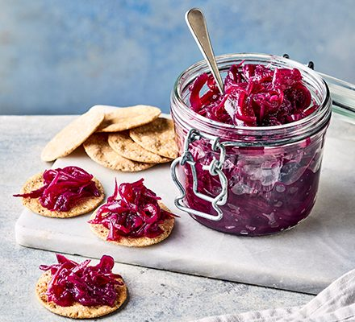

Caramalised Red Onion & Chilli Chutney

Description
This perfectly caramalised red onion chutney is sticky, sweet and spicy. It's the perfect accompaniment to everyday lunches and dinners, and is sure to win over your guests at a special occastion.
For the best results, we recommend aging for at least three months, in a cool dark place.
Makes 1 ltr
20 mins to prepare and 2 hrs to cook
Ingredients
- 3 tbsp olive oil
- 1.5kg red onions, thinly slice
- 300g dark muscavado sugar
- 200ml red wine vinegar
- 3 tbsp balsamic vinegar
- 3 tbsp pomegranite mollasses
- 3 garlic cloves, crushed
- 1 tbsp wholegrain mustard
- 1 tsp chilli flakes, dried
- 1/2 tsp cayennes pepper
- 1/2 tsp paprika
Method
- Sterilise glass jars, wash in hot, soapy water and rinse well. Dry in the oven for 15-20 mins at gas 1, 140°C, fan 120°C until hot and completely dry. Boil metal lids and rubber seals for 10 mins, then leave to dry.
- Heat the oil in a large, heavy-based saucepan and gently fry the onions over a medium-low heat for 25-30 mins, stirring regularly. The onions should be softened but not browned, and reduced by about half.
- Stir in 3 tbsp of the sugar, increase the heat, and cook for 7-10 mins, stirring occasionally, until the onions are just starting to colour. Lower the heat, then add the remaining sugar, ½ tsp salt and all the other ingredients.
- Simmer, uncovered, so it bubbles gently on a medium-low heat for 30-40 mins, or until the chutney has reduced and thickened to a dark caramel colour, stirring occasionally to check it isn’t sticking to the bottom of the pan. To test if the chutney is ready, drag a wooden spoon across the bottom of the pan – it should take a few seconds for the juices to re-cover the bottom of the pan.
- Spoon the hot chutney into cooled, sterilised jars*, then seal and label. The chutney will keep for up to 6-12 months.